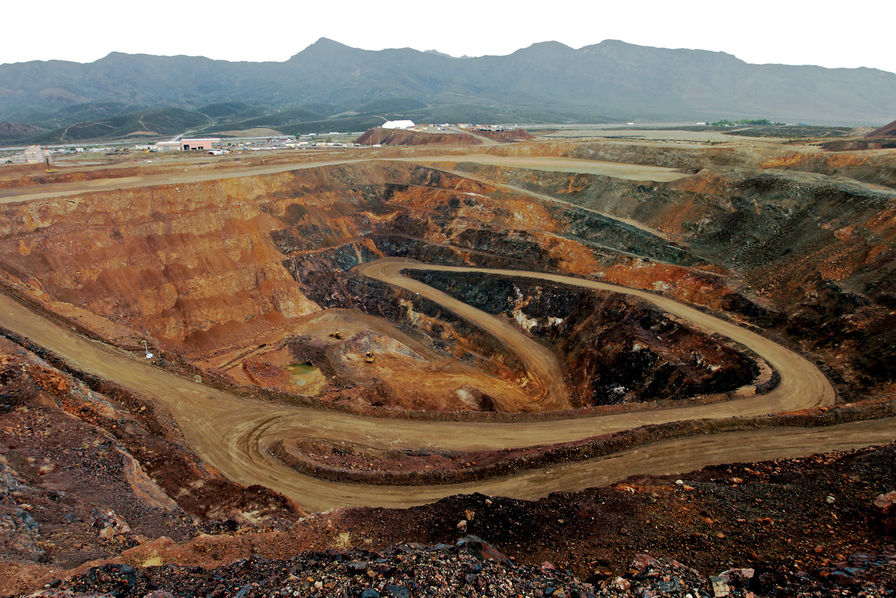
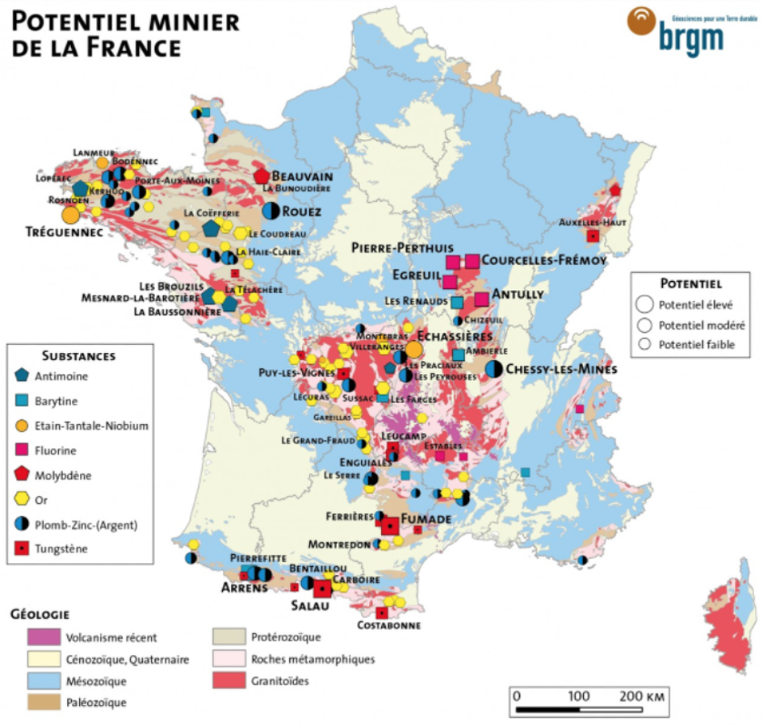
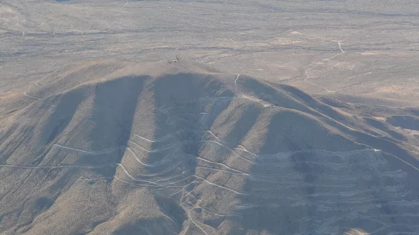
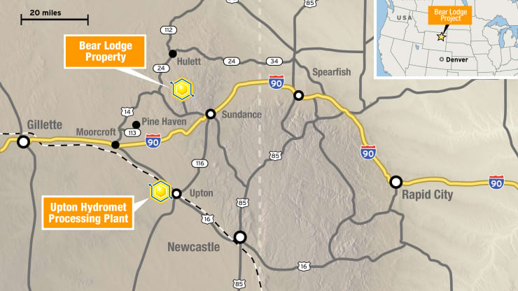

La France et les États-Unis ont, entre les années 1990 et 2000, peu à peu réduit et fermé les mines productrices de métaux rares.Plusieurs facteurs ont participé à ces fermetures notamment la découverte et le développement de fournisseurs externes, comme la Chine, ainsi qu’un aspect plus social, par l’absence de valorisation du métier de mineur.
Le groupe belge Solvay*, avait en 2011 décidé d’ouvrir sur son site de La Rochelle, une filière industrielle de recyclage des terres rares. Malheureusement cette activité industrielle a en 2016 reperdu son attractivité menant à sa fermeture.
Le groupe Solvay a racheté la société Rhodia, elle même issue du groupe Rhône-Poulenc cité dans la partie 2
Cette activité avait pour objectif principal l’extraction des métaux rares des ampoules basse consommation type néon, mais ces dernières étant de moins en moins commercialisées, souvent remplacées par des Diodes Électroluminescentes (ou LED), la filière s’est essoufflée.
Toutefois le groupe souhaitant poursuivre le développement de son expertise dans le domaine du recyclage des terres rares a maintenu ouvert son laboratoire de Recherches et d'Innovations, afin de pouvoir, si l’occasion se présente, ré-ouvrir sans attendre la filière industrielle. Aujourd’hui la branche française du groupe Solvay est spécialisée dans la production et le recyclage des oxydes pour catalyseur automobile.
L’extraction et le raffinage des terres rares posent évidemment des questions environnementales d’ordre majeur, en particulier auprès des populations locales. Mais l’entreprise assure qu’elle diminue de manière continue ses rejets sous forme aqueuse ou sous forme de composés organiques volatiles (COV). Elle dit également limiter sa consommation d’eau. De plus, vu son classement SEVESO seuil haut elle se doit de prêter une attention particulière aux respects des normes de sécurité.
Aux États-Unis la mine de Mountain Pass, localisée au Sud de la Californie ouverte en 1952, a fermé ses portes en 2002. Cette fermeture, a entraîné les États-Unis dans l’ultra dépendance aux métaux rares Chinois, plus compétitifs. Or jusqu’à 2017, la dépendance à la Chine était totale car la production américaine était tombée à zéro tonne annuelle.
Depuis 2017, les relations liant la Chine et les États-Unis se dégradent et poussent les États-Unis à réfléchir à leur indépendance en termes de métaux rares, grâce à une nouvelle politique minière.
En réalité, c’est depuis 2012 que Molycorp Materials travaille de nouveau sur des programmes d’extraction des terres rares. Et c’est en 2018, que la mine historique de Mountain Pass ré-ouvre pleinement ses portes grâce à des développements de procédés nouveaux, afin de réaliser le raffinage des métaux rares contenus dans ces terres.
La problématique est également sociétale, les Américains ne sont pas friands à l’idée de dépendre encore longtemps de l’Empire du milieu. Ils sont donc prêts à investir dans leur économie nationale. Pour que la mine de Mountain Pass fonctionne normalement il faudra que les secteurs publics et privés collaborent financièrement, afin que la mine atteigne un équilibre économique.
On constate donc des similarités entre les États-Unis et la France dont les tendances de relance des industries se suivent dans le temps. Mais ce n’est pas pour autant que les futures stratégies seront communes aux deux pays occidentaux. Puisque pour le géant Nord-Américain les métaux rares sont un sujet de défense nationale.
La France, dans l’optique de limiter les extractions minières sur son sol, adopte une tout autre stratégie que celle des États-Unis. En effet, la stratégie française, conseillée par le CESE (Conseil Économique Social et Environnemental) vise une économie circulaire des métaux rares, précisée en sept grandes étapes.
La première étape nécessaire est celle d’une consommation responsable, menant à inciter les consommateurs à porter plus d’attention à leurs achats. Principalement concernant les produits High-Tech qui ont tendance à être remplacés bien avant qu’ils en aient vraiment besoin, poussant alors à la surconsommation.
La seconde étape de cette stratégie consiste à pousser les constructeurs à opter pour de l’éco-conception. Cette pratique se développe en France depuis le début des années 2000, elle passe par plusieurs méthodes, des études d’impact environnementales préalables, le recyclage, la réutilisation ou mieux la limitation des chutes lors de la fabrication.
L’économie de fonctionnalité est le troisième vecteur de cette économie circulaire. Visant à optimiser le service rendu au consommateur selon la durée de vie du produit, deux types d’impact : l’impact immédiat comme un véhicule en autopartage qui roule au maximum du temps ou un impact indirect où le propriétaire du véhicule met tout en œuvre pour le conserver le plus longtemps.
Le quatrième facteur principal menant à cette économie serait l’écologie industrielle et territoriale. Visant à optimiser l’utilisation des ressources pour limiter l’empreinte environnementale, autrement dit que les déchets d’une industrie deviennent la matière première d’une autre.
Viennent par la suite les phénomènes de réemploi, réutilisation ou de réparation. Afin que lorsqu’un produit ne profite plus à un consommateur il puisse profiter à un autre, ou bien que l’on puisse prolonger sa durée de vie. Cette dernière action commence à être mise en avant avec la création d’un indice de réparabilité.
En avant-dernier vient le recyclage, dont les taux sont encore faibles pour les appareils utilisant des métaux rares. Néanmoins le recyclage de ces appareils est encore peu pris en charge en France. On parle également de mine urbaine, afin de désigner l’ensemble des produits qui pourraient être recyclés.
Enfin, le dernier pilier de cette économie serait un approvisionnement sécurisé en métaux rares. Cet approvisionnement de provenances multiples, pays étrangers, ressources sous-marines nationales ou bien terrestres (métropolitaines comme ultra-marines) serait la garantie d’une indépendance stratégique.
Car bien que la France ne soit pas une grande nation minière comme elle a pu l’être dans le passé, les ressources estimées sur le territoire métropolitain sont importantes comme le montre cette carte du Bureau de Recherches Géologiques et Minières (BRGM).
On peut en comparaison consulter la carte des minerais extraits par régions de nos jours.
On note tout d’abord que la métropole semble posséder un important potentiel minier notamment sur certaines régions comme la région Auvergne-Rhône-Alpes ou encore la Bretagne, les Pays de La Loire ou la Normandie.Toutefois, cette carte du potentiel minier ne reflète pas totalement celle des métaux extraits et traités. En particulier pour la région Bretagne qui, sur la première carte, présente un potentiel minier très important et n’en dégage aucune production aujourd’hui. C’est l’opposé pour la région des Hauts de France qui ne présentait pas de potentiel dans le premier document mais qui, en réalité, est relativement présente sur ce domaine.
La France fait tout de même partie des leaders des métaux rares pour deux d’entre eux : le zirconium et le hafnium qui en est issu. La France produit annuellement 70 tonnes d’hafnium dont 10 tonnes issues du recyclage, contre 30 tonnes produites annuellement par la Chine.
Les territoires d’Outre-Mer peuvent aussi jouer un rôle important dans ce domaine. En particulier grâce à l’extraction sous-marine dans la deuxième Zone Économique Exclusive au Monde. Toutefois l’extraction sous-marine est encore très limitée techniquement ainsi que très coûteuse économiquement comme écologiquement.
Aux États-Unis la perspective est totalement différente puisque depuis 2017, la politique minière s’oriente à sortir de la dépendance chinoise. Pour cela, la mine de Mountain Pass a été rouverte courant 2018. Elle représente à présent environ 15% de la production mondiale.
De plus, depuis début 2021, les politiques du gouvernement du nouveau Président J. Biden visent à étudier les nouvelles opportunités quant à la création d'une chaîne d'approvisionnements avec les alliés stratégiques des États-Unis afin de pallier aux métaux rares provenant de Chine. L'ensemble de ces métaux sont primordiaux aux yeux de la politique Biden, puisqu’ils sont les acteurs principaux de la transition écologique américaine.
Cette chaîne d'approvisionnement stratégique serait le résultat d'une enquête du gouvernement lancée suite à la crise de pénurie de semi-conducteurs aux États-Unis. Toutefois, ce plan repose sur seulement quelques pays comme Taïwan, le Japon ou la Corée du Sud mais n'inclurait aucun partenaire européen.
Comme le montre cette carte des ressources présentes aux États-Unis, on constate qu’elles sont très nombreuses. Il faut tout de même relativiser car souvent les concentrations sont très faibles ou les zones potentielles d’extraction déjà occupées.
Au Texas, un nouveau projet est en pleine émergence, mené par le régulateur Américain USA Rare Earth. Sur ce site nommé Round Top Mountain, on estime à 735 000 le nombre de tonnes contenant potentiellement des Terres & Métaux rares. De telles quantités assureraient aux États-Unis une indépendance stratégique sur le long terme.
Un autre projet est également en cours de développement dans le Wyoming, sur le site de Bear Lodge. Mais ce dernier fait face à des difficultés avec l’Agence Environnementale Américaine qui retarderait le projet. Si ce projet voit le jour, il deviendrait possiblement la mine de métaux rares la plus importante d’Amérique du Nord. En effet, dans un contexte géologique particulier, les couches anormalement épaisses de charbon contiennent des métaux rares. En revanche, il n’existe pas encore de procédé qui permettrait de séparer le charbon des métaux rares.
D'autres solutions existent aussi comme via le développement de marchés dans d'autres pays que la Chine, les États-Unis ou la France, par exemple la Russie possède 10% des réserves mondiales de métaux rares mais ne représente aujourd'hui que 2% de la production mondiale. Ou encore le Vietnam ou le Brésil qui possèdent également d’importantes réserves selon USGS.La Russie semble peiner à poursuivre le développement de sa filière de métaux rares, bien que l’ensemble des projets projettent de représenter 10% de la production mondiale d’ici 2023.
created with
HTML Builder .